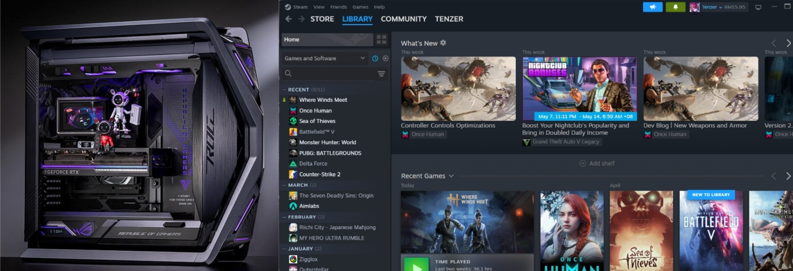
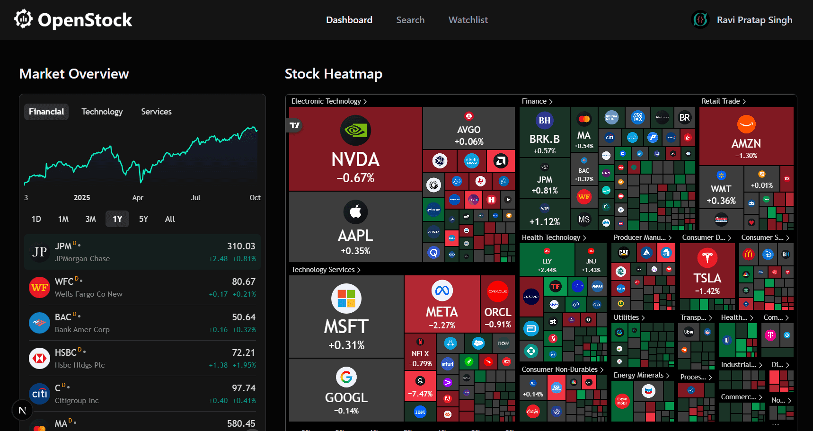

Technical Expertise
01 System & Web Development
I have enhanced my core engineering capabilities through professional experience at DXN Sdn Bhd. My focus involved optimizing Linux Ubuntu environments and executing complex PHP and SQL queries for backend systems.
Additionally, I specialize in Flutter development, building high-performance websites and cross-platform mobile applications using Dart. My expertise includes deploying sites under .app domains with secure HTTPS protocols.
02 Hardware Logistics & Tactical Gaming

I possess extensive knowledge in the Computer & Gaming Hardware sector. This includes the professional assembly and repair of high-performance PCs and laptops. I specialize in system optimization, focusing on boosting game performance and reducing ping.
I provide tactical solutions for common network issues such as lag and packet loss. Leveraging my deep understanding of various competitive titles, I offer professional coaching designed to transition players to professional levels in a condensed timeframe.
03 Quantitative Market Analysis

Active in the financial sectors since 2023, I have developed a comprehensive approach to Market Analysis and Trading. My experience spans multiple platforms, including brand/building investments and both short-term and long-term strategies in Forex and Crypto markets.
By integrating my Data Science background, I develop automated trading bots that utilize statistical models to execute high-probability trades with precision.